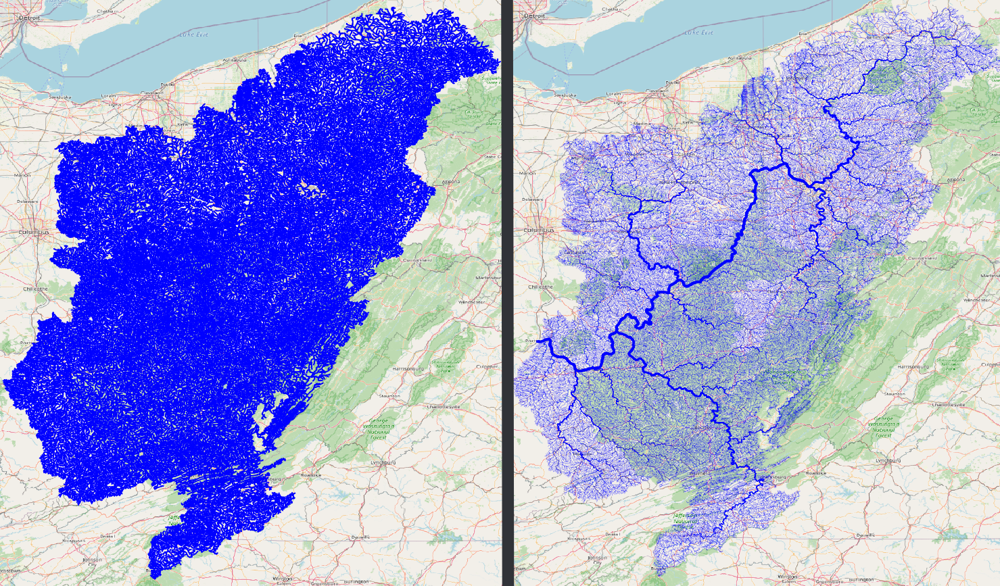

Example
The examples here will be given using QGIS plugin, and using the CLI tool both. CLI tool is great for quickly running things, and doing things in batch, while QGIS plugin will be better on visualization and manual fixes using other GIS tools.
If you want a video demostration, there is a Demo Video on YouTube.
Using QGIS Plugin
First downloading the data is done through the Download USGS Data tool. As shown in the screenshot below, input the USGS site ID and the data type you want to download.

You will need, tributaries for the upstream tributaries for network, and nwis-site will download the USGS NWIS sites upstream of the location. We will use those two for the example. If you have national data from other sources, you can use the basin polygon to crop them.
Stream Order tool is mostly for visual purposes. The figure below shows the results from stream order on right compared to the raw download on left.

After you have streams (tributaries), you can use the Check Streams tool to see if there are any errors. It will give all the nodes and their categories, you can filter them to see if it has branches, or if it has more than one outlet. The figure below shows the branches with red dot. If we zoom in we can see how the bifurcation on the stream is detected, and how stream order calculation is confused there.

Find Connections tool will find the connection between the points using the stream network. The results below shows the tool being run on the NWIS points.

If we select simplify option, it’ll only save the start and end point of the connection instead of the whole stream.

Of course you can run Stream Order on the results to get a more aesthetically pleasing result.

Using CLI
An example of running nadi-gis using CLI can be done in the following steps:
Download data
We’ll download the streamlines and the NWIS Sites from USGS for station 03217200 (Ohio River at Portsmouth, OH).
nadi-gis usgs -s 03217200 -d n -d t -o output/
This will download two files:
output/03217200_nwis-site.json output/03217200_tributaries.json
Now we can use check command to see if there are any problems with the streams.
nadi-gis check output/03217200_tributaries.json
That gives us the following output:
Invalid Streams File: Branches (826)
* Outlet: 1
* Branch: 826
* Confluence: 30321
* Origin: 29591
We can generate a GIS file to locate the branches and see if those are significant. Refer to the help for check or use the QGIS plugin.
And to find the connections, we use network subcommand like this:
nadi-gis network -i output/03217200_nwis-site.json output/03217200_tributaries.json
Output:
Outlet: 3221 (-82.996916801, 38.727624498) -> None
3847 -> 3199
2656 -> 2644
399 -> 1212
2965 -> 3942
2817 -> 6236
5708 -> 4733
2631 -> 5741
201 -> 2101
2066 -> 2317
3770 -> 1045
... and so on
Since this is not as useful, we can use the flags in the network subcommand to use a different id, and save the results to a network file.
First we can use layers subcommand to see the available fields in the file:
nadi-gis layers output/03217200_nwis-site.json -a
which gives us:
03217200_nwis-site
- Fields:
+ "type" (String)
+ "source" (String)
+ "sourceName" (String)
+ "identifier" (String)
+ "name" (String)
+ "uri" (String)
+ "comid" (String)
+ "reachcode" (String)
+ "measure" (String)
+ "navigation" (String)
Using comid as the id for points, and saving the results:
nadi-gis network -i output/03217200_nwis-site.json output/03217200_tributaries.json -p comid -o output/03217200.network
The output/03217200.network file will have the connections like:
15410797 -> 15411587
6889212 -> 6890126
8980342 -> 10220188
19440469 -> 19442989
19390000 -> 19389366
6929652 -> 6929644
... and so on
Make sure you use a field with unique name, and valid identifier in NADI System.